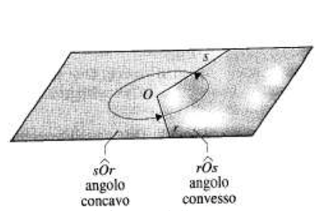
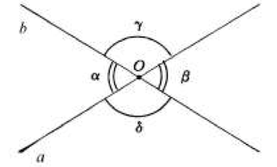
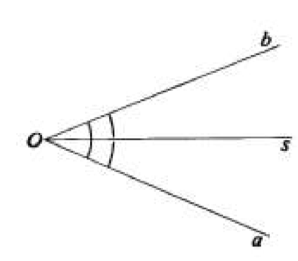

Angoli
- ....
Antonio Pierro @antonio_pierro_
Per consigli, suggerimenti, eventuali errori o altro potete scrivere una email a antonio.pierro[at]gmail.com
Cos'è un angolo.

- Consideriamo due semirette Or e Os, distinte ed aventi la stessa origine O.
- Le due semirette dividono il piano in due parti, ciascuna delle quali è chiamata angolo.
- Se le due semirette non sono opposte, uno degli angoli che esse formano è convesso e l'altro è concavo.
- Il punto O è detto vertice dell'angolo e le semirette Or e Os sono i lati dell'angolo.
Angolo piatto
- Se i lati Or e Os sono due semirette opposte, il piano viene diviso in due semipiani, ciascuno dei quali si chiama angolo piatto.
- L'angolo piatto è l'elemento separatore tra gli insiemi degli angoli convessi e concavi.
Angolo giro
- Se i lati Or e Os sono due semirette coincidenti, uno degli angoli che formano coincide con l'intero piano e viene detto angolo giro, mentre l'altro è detto angolo nullo.
Angoli consecutivi/adiacenti
- Due angoli si dicono consecutivi se hanno in comune soltanto il vertice ed un lato (fig. sx).
- Due angoli si dicono adiacenti se sono consecutivi e se inoltre i lati non comuni sono semirette opposte (fig. dx).
Angoli opposti al vertice

- Due angoli si dicono opposti al vertice se i loro lati sono semirette opposte, ovvero se i lati dell'uno sono i prolungamenti dei lati dell'altro.
- Ad esempio, nella figura, le due rette a e b, che si intersecano nel punto O, individuano quattro angoli: tra di essi, \(\alpha\) e \(\beta\) sono opposti al vertice, così come lo sono \(\gamma\) e \(\delta\)
Angolo retto
- Si chiama angolo retto un angolo che sia la metà di un angolo piatto (o un quarto di un angolo giro).
- Un angolo è detto acuto se è minore di un angolo retto
- Un angolo è detto ottuso se è maggiore di un angolo retto.
Angoli complementari/supplementari/esplementari
- Due angoli la cui somma è un angolo retto si dicono tra loro complementari;
- Due angoli la cui somma è un angolo piatto si dicono tra loro supplementari;
- Due angoli la cui somma è un angolo giro si dicono tra loro esplementari.
Bisettrice

- Si chiama bisettrice di un angolo quella semiretta che ha origine nel vertice dell'angolo e lo divide in due parti uguali.
- Nell'esempio in figura, la semiretta s è bisettrice dell'angolo aOb , ovvero: \[ a\hat{O}s = s\hat{O}b = \frac{1}{2}a\hat{O}b \]
Proprietà degli angoli 1/2
- Due angoli complementari (o supplementari) di uno stesso angolo o di angoli congruenti sono congruenti.
Angoli formati da rette parallele tagliate da una trasversale
- Disegniamo DUE RETTE PARALLELE a e b e un'altra retta, che chiamiamo r, e che interseca le rette a e b rispettivamente nei punti A e B.
- La retta r, incontrando le rette a e b forma 8 angoli che abbiamo indicato, nella figura sottostante, ognuno con un numero da 1 a 8
Angoli alterni interni/esterni
- Usando un GONIOMETRO possiamo facilmente verificare che sono UGUALI TRA LORO gli ANGOLI:
- 3 e 6, 4 e 5, cioè gli ANGOLI ALTERNI INTERNI;
- 1 e 8, 2 e 7, cioè gli ANGOLI ALTERNI ESTERNI
Angoli coniugati interni/esterni
- Usando un GONIOMETRO possiamo verificare che sono SUPPLEMENTARI gli ANGOLI:
- 3 e 5 - 4 e 6, cioè gli ANGOLI CONIUGATI INTERNI
- 1 e 7 - 2 e 8, cioè gli ANGOLI CONIUGATI ESTERNI

Teorema
- DUE RETTE SONO PARALLELE se, TAGLIATE DA UNA TRASVERSALE, formano con essa:
- ANGOLI ALTERNI INTERNI o ESTERNI UGUALI;
- ANGOLI CONIUGATI INTERNI o ESTERNI SUPPLEMENTARI.
Esempio 1
- Due rette parallele tagliate da una trasversale formano una coppia di angoli coniugati interni la cui differenza è di 72°.
- Quali sono le loro ampiezze?
- Soluzione: 54°, 126°